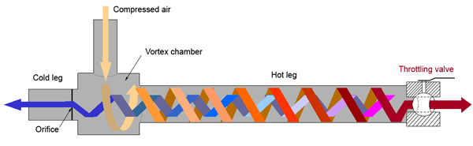

If you've found this page, you probably already know what the Ranque-Hilsch effect is. If not, you can check out the quick description on Wikipedia. I'm not so sure the effect has been as adequately explained as they suggest.
I have attempted here to create a Ranque-Hilsch effect tube. Nothing special there, but what might be of interest is that I used only off-the-shelf parts (mostly—continue reading). My intention was to show that I could get the effect without having to resort to specialty machined parts. I wasn't going for efficiency in design.
In this case, I bought most of the parts at Home Depot (Canada) for about $35.00. I did need to solder pieces together (plumbing solder), and I used a drill press and a bench grinder. The one exception to the off-the-shelf rule was that I found a particularly nifty washer in my dad's basement which I used. I suppose you could buy one. It wasn't specially machined; it was in a bottle of old washers. Other than that, nothing special was needed. Of course, you need a source of compressed air. I used my dad's air compressor.
Parts List
Measurements and photographs of the copper pipe, tubing, coupling, washer, ball valve, air fitting, and compressor.
Assembly
Construction of the vortex chamber, soldered pipe sections, hot-end valve, and completed tube.


Results
I ran with full pressure from the compressor (about 100 psi) on a day that was about 10 degrees Celsius. I used hearing protection, as the air rushing out is very loud. Starting fully charged, the compressor's air pressure started to drop rapidly after about 20 seconds of use. I throttled the ball valve such that the opening was about the same area as the hole in the washer.
I had no thermocouples—only my hands. The air coming out of the ball valve (the longest distance from the vortex chamber) felt warmer than the ambient air. The air coming out of the short end felt cooler than the ambient. I then put my hands on the copper piping. To me it felt as though the pipe was warmest right beside the vortex chamber. It felt about body temperature to me. On the cold side just beside the vortex chamber, it felt around or just below freezing. I say that because it was cold enough to be unpleasant to hold your hand on.
Future Plans
Future plans might be to install thermocouples at various points along the pipe, insulate the pipe, and also to rent a large (gas-powered) air compressor with a lot more capacity. It would be easier to use if it had a valve on the compressed-air intake. Obviously, this design, although easy to build, uses way too much air.
References
- Mark P. Silverman, And Yet It Moves: Strange Systems and Subtle Questions in Physics, Cambridge University Press, Cambridge, New York (1993).
- R. Hilsch, The Use of the Expansion of Gases in a Centrifugal Field as Cooling Process, The Review of Scientific Instruments, 1947; 18(2):108–113.